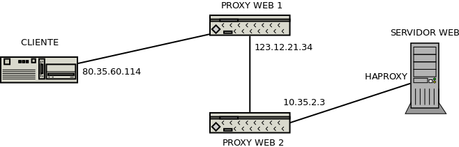

7.2.2.2.4. Control de accesos¶
Los servidor web permiten la restricción del acceso a los recursos del servidor por dos vías:
7.2.2.2.4.1. Según origen de la petición¶
Para ello, en principio, se analiza cuál es la dirección de origen de la conexión y se restringe o permite el acceso mediante las directivas allow, deny e internal.
La última de ellas, internal, impide el acceso al recurso si la petición no es interna,
esto es, generada por el propio servidor, como por ejemplo cuando se devuelve
una página de error:
error_page 403 /403.html
location = /403.html {
internal;
}
De este modo, la página sólo será enviada al servidor cuando se intente acceder a un recurso prohibido. Si el cliente intenta obtenerla directamente con http://www.example.net/403.html obtendrá un error 404.
allow y deny sirven respectivamente para permitir o denegar el acceso y
se evalúan en el orden en que aparecen. Por ejemplo:
location /docs/ {
deny 192.168.255.10;
allow 192.168.255.0/24;
deny all;
autoindex on;
}
niega el acceso de los recursos bajo tal localización a la máquina 192.168.255.10, se lo permite al resto de máquinas de esa red y, por último, se lo niega al resto.
Nota
Cuando las reglas son largas y complicadas, es mejor recurrir al módulo ngx_http_geo_module
El problema de esta restricción es que la presencia de proxies intermedios (que no actúen de manera transparente) altera la ip de origen de la conexión, ya que el servidor recibirá una conexión cuyo origen será el proxy más cercano a él. Un caso extremo es aquel en que disponemos un proxy en la propia máquina donde se encuentra el servidor web. En este caso, el origen de todas las conexiones entrantes será la propia máquina (127.0.0.1) con lo que en principio este sistema de restricción es absolutamente inútil.
Para soslayar este inconveniente los proxies pueden ir poblando la cabecera
X-Forwarded-For de manera que el servidor pueda, así,
sustituir la ip original de la conexión. nginx puede recalcular
la variable $remote_addr a partir de la información del campo anterior, si se
crea un fichero de configuración semejante a éste que aprovecha el módulo
ngx_http_realip_module:
# /etc/nginx/conf.d/realip.conf
set_real_ip_from 127.0.0.1;
set_real_ip_from 10.0.0.0/8;
real_ip_recursive on;
real_ip_header X-Forwarded-For;
La directiva real_ip_header
permite indicar cuál es el nombre del campo a analizar, set_real_ip_from
las redes y máquinas en que consideramos que hay proxies que alteran la ip
original y que queremos ignorar; y real_ip_recursive
provoca a off que consideremos la ip del cliente la última contenida en
X-Forwarded-For (siempre que la $remote_addr coincida con alguna de
las referidas en set_real_ip_from); y a on, que la ip del cliente sea
la última de X-Forwarded-For que tampoco coincida con las referidas en
set_real_ip_from.
Para ilustrarlo supongamos este esquema:
que genera la siguiente cabecera X-Forwarded-For:
X-Forwarded-For: 80.35.60.114 123.12.21.34 10.35.2.3
y un $remote_address original que vale 127.0.0.1, ya que el proxy que
recibe la comunicación en nuestro servidor (haproxy) se comunica con
nginx a través de la interfaz de loopback. En este caso, y con la
configuración anterior en conf.d/realip.conf:
- Si
real_ip_recursiveestá deshabilitado,$remote_addressacabará valiendo 10.35.2.3, o sea, la última ip deX-Forwarded-For. - En caso contrario,
$remote_addressvaldrá 123.12.21.34 ya que éste es el último valor deX-Forwarded-Forque no está incluido en las directivasset_real_ip_from.
Nota
La existencia de proxies intermedios puede alterar también el protocolo original como en el caso de que interpongamos haproxy para tunelizar por el puerto 443 también el tráfico SSH. Más adelante veremos cómo lidiar con este problema.
7.2.2.2.4.2. Autenticación¶
La autenticación del cliente puede ser realizada de distintos modos:
- Mediante usuario/contraseña, que será la que tratemos aquí.
- Como consecuencia de un subpetición.
- Mediante JWT.
La regla general es que el usuario logra acceso cuando satisface todas las condiciones de acceso (esto incluye la restricción por origen), pero puede modificarse este comportamiento a través de la directiva satisfy.
Es posible utilizar PAM para la autenticación gracias al módulo ngx_http_auth_pam[1], pero aquí trataremos la autenticación básica usando un fichero de contraseñas. Para proteger con este mecanismo un recurso podemos hacer lo siguiente:
location /privado/ {
satisfy any;
# El acceso interno es libre
allow 192.168.0.0/16;
allow 172.16.0.0/12;
deny all;
# Como el acceso interno es libre debemos impedir el cacheo del contenido.
expires -1s; # Valor negativo crea la cabecera Cache-Control: no-cache
# Si se accede desde internet, es necesaria contraseña
auth_basic "Zona privada";
auth_basic_user_file htpasswd;
}
Nota
auth_basic puede contener cualquier cadena y si vale off, se deshabilita la autenticación.
En el fichero de contraseñas cada línea contiene un nombre de usuario y una contraseña ofuscada:
# echo privilegiado:$(openssl passwd -apr1 "contraseña") >> /etc/nginx/htpasswd
# chmod 600 /etc/nginx/htpasswd
# chown www-data /etc/nginx/htpasswd
Notas al pie
| [1] | Pero usar pam_unix.so exige permitir la lectura de /etc/shadow
al usuario www-data, ya que es este el que ejecuta el módulo. Tiene más
interés usar este módulo cuando se tiene un servidor LDAP, por ejemplo. |